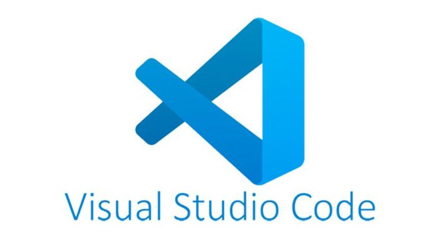

Visual Studio
-
Visual Studio Code

-
فيجوال ستوديو كود (بالإنجليزية: Visual Studio Code) هو محرر للنص البرمجي من مايكروسوفت. المحرر مفتوح المصدر
ويعمل على
نظم التشغيل ويندوز وماك أو إس ولينكس. يعتمد المحرر على بيئة إلكترون، وتم إطلاقه من قبل مايكروسوفت في أبريل
2015.
- لغات لبرمجه المدعومه
-
دعم فيجوال ستوديو كود بشكل أساسي العديد من اللغات البرمجية المتنوعة حيث أنه لا يقتصر على مجال محدد. من
اللغات المدعومة
في هذا المحرر لغة سي وسي ++ و لا ننسى لغة مايكروسوفت سي شارب كما وأنه يدعم لغات الويب الشهيرة لغة توصيف النص
الفائق
(HTML) وسي إس إس (CSS) وجافا سكريبت كما أنه يدعم لغات الـ BackEnd المتنوعة والكثير من اللغات الأخرى. كما
يحتوي المحرر
على إضافات لدعم المزيد من اللغات في حال لم تكن لغة ما مدعومة بشكل أساسي.
- الاضافات
-
مكن توسيع فيجوال ستوديو كود عبر إضافات، متوفرة من خلال مستودع مركزي. وهذا يتضمن إضافات إلى المحرر ودعم لغات
أخرى. من
الميزات البارزة القدرة على إنشاء ملحقات لإضافة دعم للغات الجديدة والسمات والمصححات وإجراء تحليل البرنامج
الساكن وإضافة
لنت النص البرمجي باستخدام بروتوكول خادم اللغة.يتضمن فيجوال ستوديو كود ملحقات متعددة لبروتوكول نقل الملفات،
مما يسمح
للبرنامج لاستخدامها كبديل مجاني لتطوير الويب. يمكن مزامنة التعليمات البرمجية بين المحرر والخادم، دون تنزيل
أي برنامج
إضافي.
- رابط التحميل
اضغط هنا للتحميل